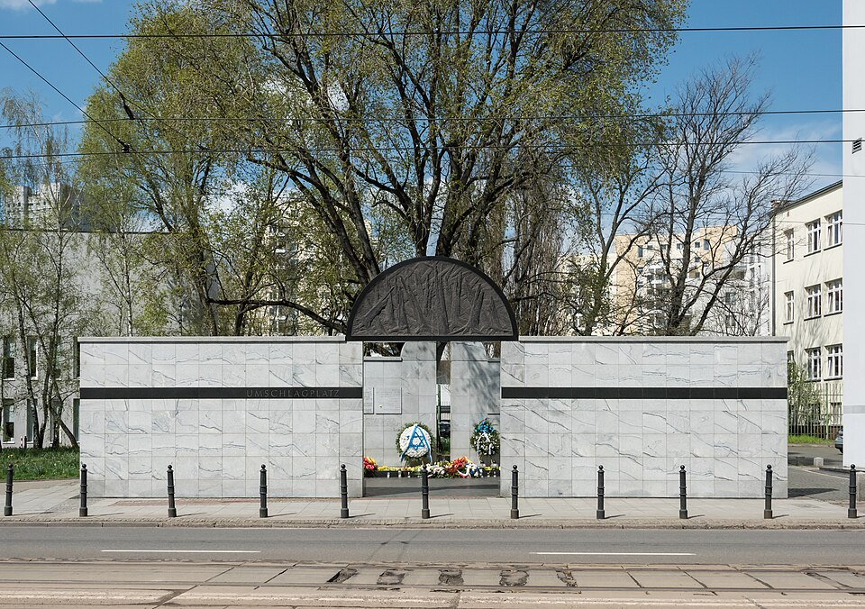
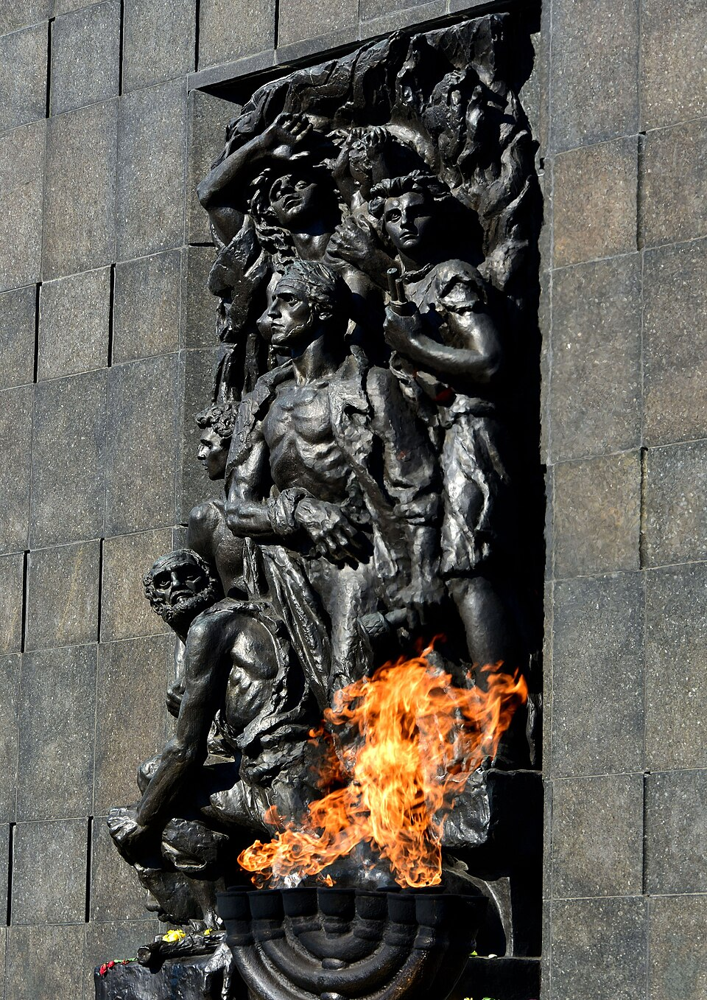
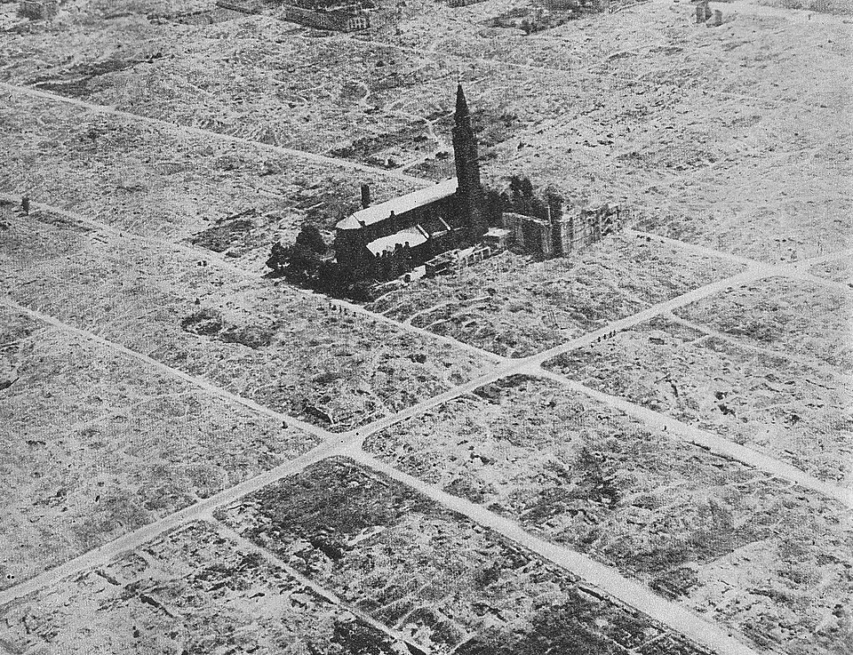

⏱️ 10초 카드 · 홀로코스트 (1911~2000)
피아니스트바르샤바 게토음악으로 견디다적 안의 사람
여는 질문 — 거대한 비극 속에서, 작은 친절 하나는 무엇을 바꿀 수 있을까?
이름
한국어브와디스와프 슈필만
원어Władysław Szpilman
실제 발음브와디스와프 슈필만 (폴란드어)
로마자Władysław Szpilman
영어권Władysław Szpilman
별칭「피아니스트」의 실존 인물
왜 이 사람인가
말이 아니라 음악으로 전쟁의 슬픔과 희망을 전한 사람이에요. 가족을 모두 잃고 폐허에 홀로 숨은 그를 살린 건, 뜻밖에도 한 명의 '적군' 장교였죠. 어느 편에도 '사람'이 있다는 걸 잊지 말라는 이야기예요.
생애
폴란드 바르샤바의 유대인 피아니스트예요. 나치 점령기 게토에 갇혔고, 가족을 모두 잃은 뒤 폐허가 된 도시에 홀로 숨어 살아남았어요.
굶주리며 숨어 지내던 그를, 뜻밖에 한 독일군 장교가 발견하고도 살려 주고 먹을 것을 건넸어요. 음악이 사람과 사람을 잇는 순간이었지요.
그의 회고록은 영화 「피아니스트」(2002)가 되었어요. 말이 아니라 음악으로 전쟁의 슬픔과 희망을 전한 사람이에요.
자료로 보기 — 유묵·사진



남긴 말
“그 폐허 속에서 나를 버티게 한 것은 총이 아니라, 머릿속에서 멈추지 않고 흐르던 음악이었다.”
숨어 지내던 시절을 돌아보며 — 연주할 피아노조차 없던 때에도 그는 마음속으로 곡을 연주했다고 회고했어요. · 출처: 회고록 〈피아니스트〉 취지
“이 광기를 막을 수 없다면, 적어도 내가 구할 수 있는 사람은 구하겠다.”
폐허 속의 슈필만을 발견하고도 살려 준 독일군 장교 호젠펠트의 일기예요. '적' 안에도 한 사람의 양심이 있었음을 보여 주죠. · 출처: 빌헬름 호젠펠트의 일기
연표
- 1911출생
- 1940~바르샤바 게토에 갇힘
- 1943~44폐허 속 은신·생존
- 2000사망
한 도시 안의 전쟁 — 바르샤바의 피아니스트
슈필만의 전쟁은 거의 한 도시, 바르샤바 안에서 펼쳐졌어요. 그 도시 안을 따라가면 한 사람의 생존이 보여요.
현재 지도 위 표시예요(대략 위치). 한 도시 안의 좁은 거리들이, 그에게는 삶과 죽음의 갈림길이었어요.
빛과 그림자거대한 비극 한가운데서도 작은 친절(적군 장교의 도움)이 사람을 살렸어요. 어느 편에도 '사람'이 있다는 걸 잊지 말라는 이야기예요.
더 깊이 (고등·일반)
라디오가 멈추던 날
그는 바르샤바 라디오의 피아니스트였어요. 1939년 독일의 폭격이 도시를 덮치던 날, 그는 쇼팽을 연주하고 있었고 방송은 그대로 끊겼죠. 평화로운 일상이 전쟁으로 바뀌는 순간이었어요.
게토와 움슐라크플라츠
유대인이라는 이유로 그와 가족은 바르샤바 게토에 갇혔어요. 그리고 가족은 '움슐라크플라츠'라는 광장에서 죽음의 수용소행 기차에 실렸죠 — 그는 마지막 순간 떠밀려 혼자 남겨졌어요.
폐허 속의 숨바꼭질
그는 텅 빈 건물들을 옮겨 다니며 굶주림과 추위, 발각의 공포 속에 숨어 살았어요. 도시는 점점 폐허가 되어 갔고, 그는 유령처럼 그 사이를 떠돌았죠.
호젠펠트 — 적 안의 사람
숨어 있던 그를 한 독일군 장교 빌헬름 호젠펠트가 발견했어요. 그런데 장교는 그를 신고하는 대신, 피아노를 쳐 보라 하고는 먹을 것을 가져다주며 살려 줬죠. 음악이 사람과 사람을 이은 순간이에요.
다시 피아노 앞으로
살아남은 그는 전쟁이 끝난 뒤 다시 라디오 방송을 시작했어요 — 폭격으로 끊겼던 바로 그 쇼팽 곡으로요. 그의 회고록은 영화 「피아니스트」(2002)가 되어 세계에 전해졌죠.
사람의 그물 — 함께 읽을 인물
이 인물이 나오는 이야기
더 공부하기 — 여기서 출발하세요
📚 책으로
- 피아니스트 (The Pianist) ↗ · 브와디스와프 슈필만그가 직접 쓴 생존 회고록 — 영화의 원작.
- 바르샤바 게토 ↗그가 갇혔던 게토와 그 시대를 이해하기.
📜 1차 사료
- 브와디스와프 슈필만 (브리태니커) ↗생애와 회고록을 정리한 신뢰 자료.
🎬 영상으로
- 영화 예고편 — 피아니스트 (2002) ↗ · Rotten Tomatoes Classic Trailers그의 회고록을 옮긴 폴란스키 영화의 예고편.
📍 가 볼 곳
- 움슐라크플라츠 기념비 (바르샤바)수많은 유대인이 기차에 실린 광장 — 그의 가족도 이곳에서.
- 바르샤바 게토 추모벽게토의 경계를 기억하는 표식들.
- 게토 영웅 기념비 (바르샤바)게토에서 스러진 이들을 기리는 기념물.